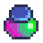

Amuletos
Los Amuletos son adornos de vestimenta que pueden usarse como equipamiento. Cada uno de ellos le da a cada jugador beneficios únicos.
Pueden ser encontrados después de lograr y tener la Maestría de Combate, pueden ser soltados por monstruos, en los Cofres del tesoro de la Caverna Calavera o comprados.
El jugador puede obtenerlos múltiples veces, pero no son acumulables. Pueden ser vendidos en el Gremio de aventureros por  1000o y todos, con excepción de la Garra de basilisco y la Gomina mágica, se pueden reforjar usando un Yunque. Esto generará una asignación aleatoria de sus valores y cuesta 3 Lingote de iridio por vez.
1000o y todos, con excepción de la Garra de basilisco y la Gomina mágica, se pueden reforjar usando un Yunque. Esto generará una asignación aleatoria de sus valores y cuesta 3 Lingote de iridio por vez.
Lista de amuletos
| Image | Nombre | Cambio en yunque | Max | Descripción | Fuente | Precio venta |
|---|---|---|---|---|---|---|
| Garra de basilisco | N/A | N/A | Eres inmune a los bonificadores malignos. | |||
| Caja de hadas | Nivel | 5 | Invoca a un hada que te cura en situaciones de combate. | |||
| Huevo de Rana | Color | N/A | Invoca a una rana hambrienta para acompañarte. | |||
| Espuela dorada | Duración | 10 segundos | Los golpes críticos te dan un incremento de velocidad por X segundos. | |||
| Vara de hielo | Frecuencia; Duración |
3 segundos (min); 4 segundos |
Dispara una orbe de hielo cada X segundos, congelando cualquier enemigo en su camino por Y segundos. | |||
|  | Gomina mágica | N/A | N/A | Tu cabello brilla con todos los colores de una esquirla prismática. |
|
|
| Carcaj mágico | Tipo: (Ninguno), Perfecto, Rápido, Pesado | Varía por tipo | Dispara una flecha mágica a enemigos cercanos cada X segundos, haciendo Y-Z de daño. | |||
| Huevo de loro | Nivel | 4 | Invoca a un loro de nivel X, quien te concede una probabilidad de Y de encontrar monedas de oro cuando mates mostruos. |
Probabilidades de obtención
Todos los amuletos, excepto la gomina mágica para el cabello, tienen un 0.63% de probabilidad de encontrarse en un cofre del tesoro de una sala del tesoro en la Caverna Calavera. Si el jugador aún no ha reclamado la maestría, entonces la probabilidad es del 0.64% para cada amuleto.[1] Los cálculos para las tasas de caída de monstruos y contenedores son más complejos y dependen de varios factores.[2]
Monstruos
Cuando son eliminados, todos los monstruos tienen la probabilidad de dejar caer, de forma aleatoria, un amuleto (excepto la Gomina mágica.
Las probabilidades se calculan de la siguiente manera:
- Cada monstruo comienza con una probabilidad base del 0.4%.
- Cada punto de salud máxima agregará un 0.001% adicional a la probabilidad base.[3]
- Después de agregar la salud máxima del monstruo, se considera su categoría:[3]
- Si está clasificado como enemigo volador y su salud máxima ≥ 150, entonces se agrega un 0.2% a la probabilidad de obtención. Esta condición se aplica a: Murciélagos de iridio, Murciélagos (peligrosos), Murciélagos de lava (peligrosos), Calavera encantada, Calavera encantada (peligrosa), [ [Mosca (peligrosa)]], Fantasma de carbón, Fantasma pútrido, Niño calamar (peligroso), Bicho (peligroso), Bicho armado (peligroso), Serpiente, Serpiente real, Duende de magma, Chisporroteador de Magma, Centinela enano y Calamar azul.[4]
- Si se clasifica como saltador, se resta el 0.5% de la probabilidad de obtención. Esta condición sólo se aplica a las arañas.
- Después de considerar todo lo anterior, la probabilidad es el mínimo entre el valor calculado y el 2.5%. La probabilidad máxima teórica en este punto es del 2.5%. En realidad, la probabilidad calculada suele oscilar entre el 0.1% (Araña) y el 1.65% (Serpiente real con 18 segmentos de cola).
- Se agrega la suerte diaria del jugador, mediante la siguiente fórmula:
baseChance += Game1.player.DailyLuck / 25.0. La suerte diaria varía de -0.1 (mala suerte) a 0.1 (buena suerte) y el valor aumenta en 0.025 con el Amuleto especial.- En el peor de los casos (sin Amuleto especial y día de peor suerte
 ), la probabilidad disminuye en un 0.4%.
), la probabilidad disminuye en un 0.4%. - En el mejor de los casos (con Amuleto especial y día de mejor suerte
 ), la probabilidad aumenta en un 0.5%.
), la probabilidad aumenta en un 0.5%.
- En el peor de los casos (sin Amuleto especial y día de peor suerte
- Finalmente, las bonificaciones de suerte del jugador se agregan mediante la siguiente fórmula:
baseChance += Game1.player.LuckLevel * 0.00133). Cada punto de suerte (a través de comida, anillos, etc.) agregará un 0.133 % a la probabilidad de obtención.
Los amuletos no se agregarán directamente al bloque de elementos que deja caer un monstruo; se generarán por separado. Esto significa que el Anillo del ladrón y el Compendio de Monstruos no impactarán la probabilidad ni la cantidad de amuletos que se obtengan.
Cajas y barriles
Los contenedores rompibles en Las Minas, la Caverna Calavera, y la Cantera tienen una probabilidad de soltar un amuleto al azar que no sea la gomina mágica. Se calcula de la siguiente manera:
probabilidad = ( 0.4% + DailyLuck/ 25.0 + LuckBuffs × 0.133% ) × ( 1.0 + effectiveMineLevel * 0.001 ) × 0.8
- En las minas, effectiveMineLevel = nivel.
- En la caverna calavera, effectiveMineLevel = nivel + 120.
- En la cantera, effectiveMineLevel = 5000.
Notas
- Aún cuando los amuletos pueden ser regalos, no aparecerán en el registro de regalos.
Referencias
- ↑ Ver MineShaft::getTreasureRoomItem en el código del juego.
- ↑ See Trinket::TrySpawnTrinket en el código del juego. Las probabilidades están determinadas en GameLocation::monsterDrop y BreakableContainer::releaseContents.
- ↑ 3,0 3,1 La base de salud y clasificación de monstruos pueden ser encontradas en Data\Monsters.xnb.
- ↑ Los fantasmas están codificados como enemigos voladores en Ghost.cs.
Historial
- 1.6: Introducido.